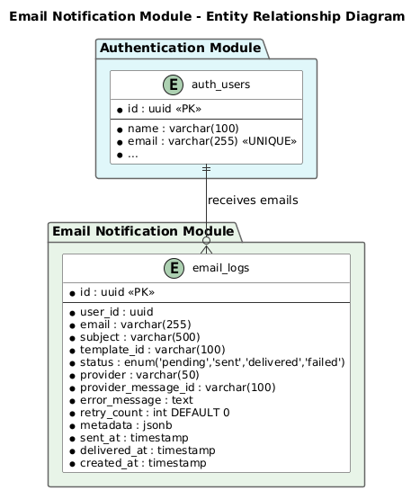

Thiết kế Cơ sở dữ liệu
Module Thông báo Email
EMAIL
1. Giới thiệu
1.1 Mục đích
Tài liệu này mô tả thiết kế cơ sở dữ liệu cho module Thông báo Email, bao gồm schema, chỉ mục và script di chuyển.
1.2 Tổng quan Cơ sở dữ liệu
| Thuộc tính | Giá trị |
|---|
| Tên Cơ sở dữ liệu | email_db |
| Module | EMAIL - Thông báo Email |
| Bảng | email_logs |
| Engine | PostgreSQL |
2. Sơ đồ Quan hệ Thực thể

Hình 1: ERD Thông báo Email
3. Định nghĩa Bảng
3.1 email_logs
Lưu log giao email bao gồm người nhận, chủ đề, trạng thái và chi tiết nhà cung cấp.
| Cột | Loại | Ràng buộc | Mô tả |
|---|
| id | uuid | PK, NOT NULL, DEFAULT gen_random_uuid() | Mã định danh duy nhất |
| user_id | uuid | NOT NULL | Mã người dùng liên kết |
| email | varchar(255) | NOT NULL | Địa chỉ email người nhận |
| subject | varchar(500) | NOT NULL | Chủ đề email |
| template_id | varchar(100) | NOT NULL | Mã định danh mẫu email |
| status | enum('pending','sent','delivered','failed') | NOT NULL, DEFAULT 'pending' | Trạng thái giao dịch |
| provider | varchar(50) | NOT NULL | Tên nhà cung cấp email (sendgrid, smtp) |
| provider_message_id | varchar(100) | NULL | Mã tin nhắn của nhà cung cấp để theo dõi |
| error_message | text | NULL | Chi tiết lỗi nếu giao email thất bại |
| retry_count | integer | NOT NULL, DEFAULT 0 | Số lần thử lại |
| metadata | jsonb | NULL | Dữ liệu ngữ cảnh bổ sung (OTP, biến mẫu) |
| sent_at | timestamp | NULL | Thời gian gửi email đến nhà cung cấp |
| delivered_at | timestamp | NULL | Thời gian email được giao cho người nhận |
| created_at | timestamp | NOT NULL, DEFAULT NOW() | Thời gian tạo bản ghi |
SQL CREATE TABLE
CREATE TABLE email_logs (
id UUID PRIMARY KEY DEFAULT gen_random_uuid(),
user_id UUID NOT NULL,
email VARCHAR(255) NOT NULL,
subject VARCHAR(500) NOT NULL,
template_id VARCHAR(100) NOT NULL,
status VARCHAR(20) NOT NULL DEFAULT 'pending'
CHECK (status IN ('pending', 'sent', 'delivered', 'failed')),
provider VARCHAR(50) NOT NULL,
provider_message_id VARCHAR(100),
error_message TEXT,
retry_count INTEGER NOT NULL DEFAULT 0,
metadata JSONB,
sent_at TIMESTAMP,
delivered_at TIMESTAMP,
created_at TIMESTAMP NOT NULL DEFAULT NOW()
);
4. Chỉ mục
| Tên Chỉ mục | Bảng | Cột | Mục đích |
|---|
| idx_email_logs_user_id | email_logs | user_id | Truy vấn email theo người dùng |
| idx_email_logs_status | email_logs | status | Lọc theo trạng thái giao dịch |
| idx_email_logs_created_at | email_logs | created_at | Truy vấn theo thời gian và dọn dẹp |
| idx_email_logs_provider_message_id | email_logs | provider_message_id | Tra cứu theo mã tin nhắn nhà cung cấp |
SQL CREATE INDEXES
CREATE INDEX idx_email_logs_user_id ON email_logs (user_id);
CREATE INDEX idx_email_logs_status ON email_logs (status);
CREATE INDEX idx_email_logs_created_at ON email_logs (created_at);
CREATE INDEX idx_email_logs_provider_message_id ON email_logs (provider_message_id);
5. Script Di chuyển
5.1 Di chuyển Ban đầu
-- Di chuyển: Tạo bảng email_logs
-- Ngày: 2026-07-24
-- Module: EMAIL
BEGIN;
CREATE TABLE email_logs (
id UUID PRIMARY KEY DEFAULT gen_random_uuid(),
user_id UUID NOT NULL,
email VARCHAR(255) NOT NULL,
subject VARCHAR(500) NOT NULL,
template_id VARCHAR(100) NOT NULL,
status VARCHAR(20) NOT NULL DEFAULT 'pending'
CHECK (status IN ('pending', 'sent', 'delivered', 'failed')),
provider VARCHAR(50) NOT NULL,
provider_message_id VARCHAR(100),
error_message TEXT,
retry_count INTEGER NOT NULL DEFAULT 0,
metadata JSONB,
sent_at TIMESTAMP,
delivered_at TIMESTAMP,
created_at TIMESTAMP NOT NULL DEFAULT NOW()
);
CREATE INDEX idx_email_logs_user_id ON email_logs (user_id);
CREATE INDEX idx_email_logs_status ON email_logs (status);
CREATE INDEX idx_email_logs_created_at ON email_logs (created_at);
CREATE INDEX idx_email_logs_provider_message_id ON email_logs (provider_message_id);
COMMIT;